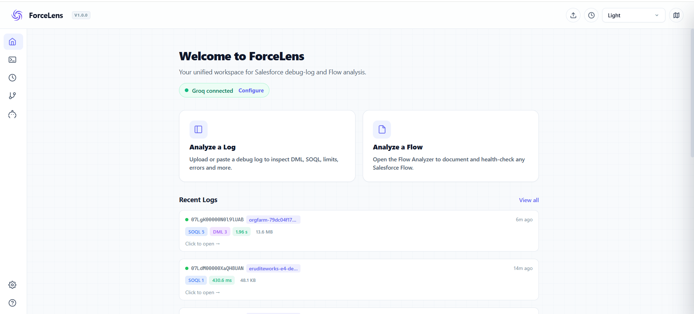
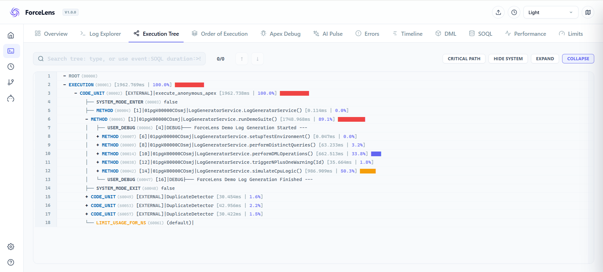
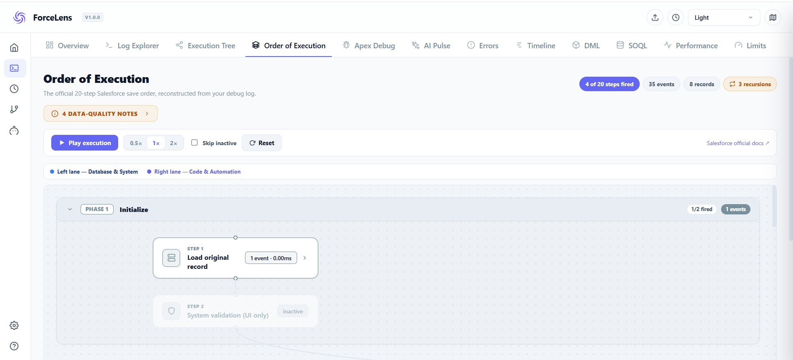
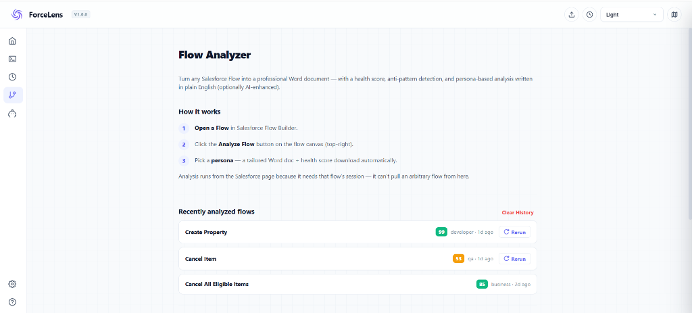
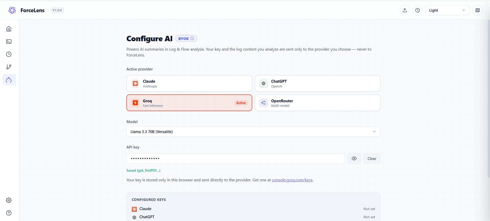
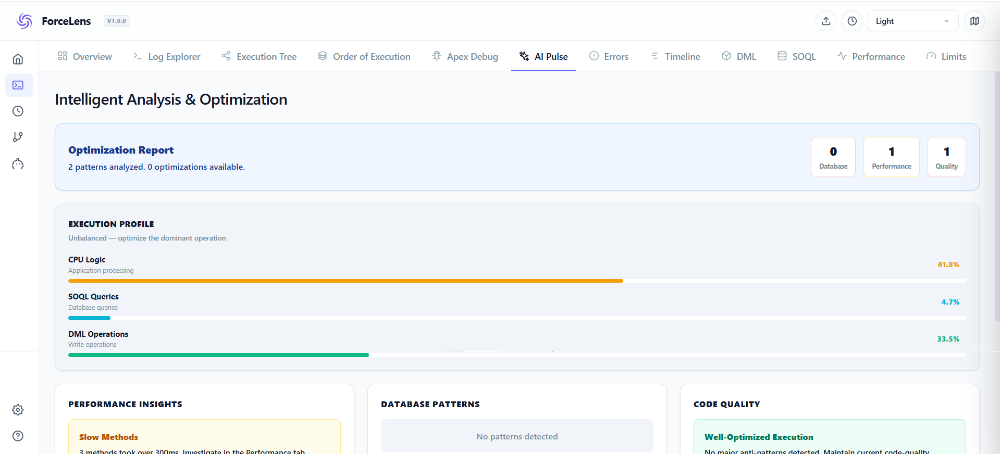

Read Salesforce debug logs like a story, not a riddle.
Click Copy, paste into your chat or email, and attach the suggested screenshot from the assets folder.
Attach: assets/forcelens_home.png or your promo tile image
Hi, I wanted to share a tool I have been building for Salesforce developers. ForceLens is a free Chrome extension that turns raw Apex debug logs into a clear, visual order of execution. Instead of setting trace flags and reading logs line by line, you click Smart Capture, run your transaction, and it shows you exactly what fired, in what order, and how limits were consumed at each step. It also analyzes Flows from four perspectives: Developer, Business Analyst, QA, and Security. AI features work with your own API key and everything runs locally in your browser, so nothing leaves your org. Install (free): https://chromewebstore.google.com/detail/kgjfgfpcglhhodepffbhoalfppdjbdhi Website: https://forcelens.vercel.app It takes under a minute to set up. I would genuinely appreciate your feedback.
Attach: assets/forcelens_home.png and assets/forcelens_tab_execution_tree.png
Subject: ForceLens — Cut Salesforce debugging time from hours to minutes Dear [Name], I would like to introduce you to ForceLens, a Chrome extension built to solve one of the most time-consuming problems in Salesforce development: debugging. Today, diagnosing an issue in Salesforce means enabling trace flags, downloading raw debug logs, and reading thousands of lines manually. ForceLens replaces that entire process with a single click. What it delivers: 1. Smart Capture — One click captures and organizes debug logs automatically, with no manual trace flag setup. 2. True Order of Execution — A visual reconstruction of exactly when triggers, validation rules, flows, and workflows fired, and how governor limits were consumed at every step. 3. Flow Intelligence — Any Flow can be analyzed through four expert perspectives: Developer, Business Analyst, QA, and Security. 4. Enterprise-Safe by Design — ForceLens is 100% local-first. All processing happens in the browser. AI features use your own API key (BYOK), so no org data is ever sent to a third-party server. The extension is free on the Chrome Web Store and takes under a minute to install: https://chromewebstore.google.com/detail/kgjfgfpcglhhodepffbhoalfppdjbdhi You can learn more at https://forcelens.vercel.app. I would be glad to walk you or your team through a short demo at your convenience. Best regards, Prit Sakhvala
Attach: your promo tile image, plus 2–3 screenshots as a carousel
Every Salesforce developer knows this ritual: enable trace flags, run the transaction, download the debug log, and scroll through thousands of lines hoping to spot the problem. I built ForceLens to end that ritual. ForceLens is a free Chrome extension that turns raw Apex debug logs into a clear visual story: - Smart Capture: one click captures and groups your logs, no trace flag setup - True Order of Execution: see exactly when triggers, flows, validation rules, and workflows fired, and how limits were consumed at each step - Flow Intelligence: analyze any Flow through four lenses — Developer, Business Analyst, QA, and Security - Local-first and BYOK: everything runs in your browser, AI uses your own API key, and no org data ever leaves your machine It is free on the Chrome Web Store, and I would love your feedback. Install: https://chromewebstore.google.com/detail/kgjfgfpcglhhodepffbhoalfppdjbdhi Learn more: https://forcelens.vercel.app #Salesforce #Apex #SalesforceFlow #TrailblazerCommunity #SalesforceDeveloper #Debugging
Which image to attach with which message.

Home / Analysis Workspace — best first impression; use in every share.

Execution Tree — shows the core value; ideal for emails to technical clients.

Order of Execution — strongest differentiator; great for LinkedIn carousels.

Flow Analyzer — highlights the four-lens AI analysis.

BYOK Settings — proof of the security story for enterprise clients.

AI Pulse — the AI explanation feature in action.